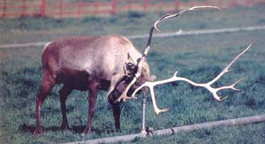

Beginning The Reign Of Reindeer?
December/January 2001
By Sarah Beth Cavanah
Photography by Diane Kulpinski
You know Dasher and Dancer, but did you also know that reindeer are poised to be a hot item in small-scale agriculture? Their cuteness factor is undeniable, plus they're friendly and can be lucrative when the holidays arrive. But if you decide to raise them before investigating thoroughly, it could be your face - not just your nose - that's bright red.
Remember when pot-bellied pigs were going to make us all rich? When emus were going to replace the beef industry? Exotic animals have come in and out of popularity and often haven't lived up to their hype. Could reindeer be different?
Well ... maybe. Reindeer enthusiasts say being on the forefront has its rewards. Reindeer can make beaucoup bucks by just standing in front of a sleigh for a few weeks, and the rest of the year they provide the advantages of white-tailed deer in a friendly, domesticated package. However, the process is not without pitfalls. Any who choose to be on the cutting-edge of this trend will be pioneers, dealing with all that pioneers face: lack of practical local knowledge, uncertain markets and the high cost of novelty, to name a few. There is plenty of help available if you go the reindeer route. To raise or not to raise, that is the question.
CHECKING OUT CUPID
Judy Tamagni was considering adding to her menagerie, which already included horses, mules, a miniature donkey, guinea pigs, chickens and various other animals. Tamagni's husband had already put the brakes on acquiring more critters. But Tamagni had seen some reindeer in a local Christmas parade and was envisioning the possibilities. Tamagni thought the reindeer could do some light harness work, or might be able to complement the sheep the family uses to graze their 20 acres of noncrop land. Then there was the novelty aspect: During the holiday season, reindeer can be rented out for events or promotions, making money by merely showing up. "They're just adorable," Tamagni said.
A year later, Tamagni still doesn't have reindeer. It's not that the possible advantages aren't attractive enough, but Tamagni is concerned about the pitfalls she can't anticipate. What if the cold-weather creatures don't take well to the mild climate of Tamagni's Napa Valley property? She's also heard that reindeer bulls sometimes can be temperamental and difficult to deal with. Then there's the uncertainty as to exactly how California's Fish and Game Department will view the reindeer: Are they livestock that can use regular fencing and other equipment, or will the state require her to treat them like white-tailed deer, with high fences and Byzantine regulations? And, of course, the price tag: One doe costs between $2,000 and $3,000, plus whatever it costs to transport the animals. "You just don't venture into something with animals without knowing what you're doing," Tamagni said.
All of Tamagni's concerns constitute just the right attitude, according to Bob Dieterich, a University of Alaska professor emeritus. Dieterich has spent more than 30 years with reindeer since he arrived to be the veterinarian at the Institute of Arctic Biology in 1967. He believes the most important thing for reindeer's success as a domesticated animal in the United States will be potential buyers' willingness to take time to learn about reindeer, especially from people who already own them. If potential reindeer wranglers prepare well, Dieterich thinks the animals could be primed to sweep through small farms across the United States and Canada.
So what's so great about these smaller cousins of the caribou? For starters, they're cute. (Come on. Even you hardcore homesteaders have to admit the 3-foot-tall females resemble plush stuffed animals.) You don't get the job of pulling the sled of the world's biggest celebrity if you have a bad attitude, either. So they're cute, friendly, and - believe it or not - provide all the products one would expect out of livestock, but not out of pets. Domesticated in Scandinavia and Mongolia centuries ago, the herd that all North American reindeer are descended from was brought over in 1891 from Russia by the Rev. Sheldon Jackson to help provide for Eskimos in Alaska. Reindeer meat is low fat, low cholesterol and high protein. The thick hides are workable and durable, and every year they drop their antlers, which can be sold as is or carved into art items. Reindeer are truly do mesticated, as well.
People who work with them say they are friendly and docile (with the exception of bulls in mating season, and, hey, we all have our moments). Still, most of the reindeer in North America today belong to Eskimo and Inuit groups.
In Scandinavia, reindeer steaks and other cuts of the mild-tasting meat are readily available. But here in the New World, providers of reindeer products are virtually impossible to find. A few places, like Alaska Sausage and Seafood of Anchorage, sell reindeer sausage, but the sausage is really a mixture of different meats (reindeer meat alone doesn't have the high fat content needed for sausage making), and according to a representative of the company, buyers can't even taste the reindeer content. The company sells the sausage mainly for its exotic Alaskan appeal.
Before you decide you're going to pro vide North America with reindeer's healthy meat, you should consider this: Reindeer domestication occurred before dentist Clement Clark Moore wrote "The Night Before Christmas" in 1882. Some Americans might be repelled by the prospect of eating Comet and Cupid's kin. But the main reason reindeer meat can't be found in North America's markets is this: The animals are worth more alive than dead.
PROFITING FROM PRANCER
Gordon Poest fell in love with reindeer when he took in an orphan and hand raised it. He now owns 11 and spends every weekend in November and December renting out a couple of reindeer to places around his Hamilton, Michigan, home at $100 an hour - $200 if they are expected to pull a sleigh. "People call in the fall and ask about (renting some of my reindeer)," he said. "I tell them they need to call a year in advance. That's how booked up I am." Poest is not alone: Having real reindeer in Santa displays draws more children (and therefore holiday business) to malls, stores and Christmas tree dealers.
Another potential moneymaker for reindeer owners is providing antlers in velvet lot the traditional Asian medicine market. Velveted antlers are ground up for use in several remedies, but the process requires rutting the antlers while they're still growing. The process is complex, and although some say the reindeer can't feel the removal, no one can say for sure. Either way, the antlers would have to be harvested during summer, meaning they're gone by the time the prime season for renting out reindeer for Christmas-related events rolls around, and without the antlers, the reindeer don't look like the Rudolphs everyone expects. The market also fluctuates, and a lot depends on the owner's ability to make connections in the traditional Asian medicine network. The practice is by no means popular among North American owners, although you probably won't be ostracized if you participate. But males naturally drop their racks in late December, and females lose theirs after the spring calving season. Instead of cutting off and selling velveted antlers, Poest says he has found a good market for pen and pencil sets he carves from the antlers that drop off naturally.
Some Americans might be repelled by the prospect of eating Comet and Cupid's kin. But the main reason reindeer meat can't be found in North America's markets is this: The animals are worth more alive than dead.
Caring for Reindeer
Reindeer are no more susceptible to disease than other domesticated animals, but they do have their own medical quirks. Bob Dieterich, a retired veterinary professor, said anyone who thinks they might be interested in raising reindeer needs to let their intentions be known to their local vet.
Although veterinary programs are covering an increasing number of animals, reindeer generally are not included in the general U.S. curriculum. A source of veterinary information for you and your vet can be obtained from the Reindeer Research Program at the University of Alaska. Dieterich said people who don't have a regular vet should search out one in their area who deals with horses and discuss whether the vet would be willing to learn to treat reindeer.
New buyers of reindeer need to have detailed conversations with the sellers about the particular animals, especially what they've been eating. In their natural environments, reindeer live off lichen and grasses, but should be fed a commercial diet of grain and roughage when moved into captivity. Reindeer are extremely susceptible to changes in diet and should only be fed what they're used to. Buyers should ask that some of the feed be sent with the reindeer when they are transported to their new home.
Brucellosis is a serious bacterial disease found in most Alaskan and Canadian herds. Animals should be tested. Reindeer can also acquire diseases common in other domesticated herds. The best treatment is prevention, and once again, a vet with reindeer knowledge is important. Owners must also be vigilant in watching their reindeer for subtle behavior changes. Reindeer don't show symptoms of sickness until they are very ill, and by then it may be too late to save them.
Sources:
REINDEER OWNERS AND BREEDERS ASSOCIATION, INC.
Raising Reindeerfor Profit and Pleasure
Ethel Evans, Corresponding Secretary
10190 Bayou Gulch Road Parker, Colorado 80134
(303) 841-4098
REINDEER RESEARCH PROGRAM
University of Alaska-Fairbanks
176 Arctic Health Research Building Fairbanks, Alaska 99775
(907) 474-5449
OPERATION SANTA CLAUS
4355 W. Highway 126 Redmond, Oregon 97756
(541) 548-8910
But all of Judi Tamagni's concerns are valid, according to reindeer experts. Poest, author of Raising Reindeer for Pleasure and Profit (see Sources ) said reindeer do best in colder climates. But with extra care - such as adequate shade and fans for really hot days - reindeer can thrive even in the southern United States. Dieterich said an acre or two of land is sufficient for a few head of reindeer, but although the animals aren't really jumpers and a 4 1/2foot fence would keep them in, some states require a 10-foot fence for any member of the deer family. Since every state is different, people interested in raising reindeer would need to contact their state's fish and game department first. For those who aren't interested in breeding their animals, it might be advisable to just get females, since males can become exceedingly feisty during mating season. "They go from eating out of your hand on Sunday to tearing you apart on Monday," Poest said. Castration is an option, but even though it calms males down, it affects antler growth, eventually weakening and softening the male's rack - hardly appealing for those holiday displays. A solution just beginning to take hold is using the human contraception injection Depo-Provera. Poest said a couple of injections a year keep males from going into nit, the time they usually become aggressive.
Without doubt, the most important thing a prospective reindeer herder can do is to get in contact with people who are already out there doing it. That's what Judy Tamagni did by joining the Reindeer Owners and Breeders Association (see Sources ). The association, of which Poest is the outgoing corresponding secretary and Dieterich a member of the board, has gone from a few members 10 years ago to a few hundred members located in 41 of the United States and nine Canadian provinces. Members receive a newsletter and advice on training and health care (see sidebar), and they also put on national and regional meetings where owners and potential owners can attend seminars on raising reindeer, and talk with others about problems and solutions. The association is also the best way to find (and find out about) reindeer calf providers, usually just members with small herds themselves.
The biggest key to success with reindeer, say those who know, is looking beyond the possible economic benefits to seeing them as intelligent animals. Dieterich, who now works as a reindeer transportation consultant (helping to bring the somewhat sensitive northern animals to the south) is the first to admit he's a biased source, but he gives the example of how his 10-year-old daughter used to complain about going out to work on the University of Alaska's research herd with him. The daughter, now grown, voluntarily returns periodically to work with the herd, even without her father. That's how addictive Dieterich said reindeer are. Its not something owners and enthusiasts can easily put their fingers on: Maybe it's the cute factor; maybe it's the animals' natural friendliness; or maybe reindeer bring up childhood associations of magical holiday seasons. Whatever their appeal, those who've already lost their hearts to these little winter workhorses have no doubt that reindeer can reign in North America. "They're such a neat animal to be around," Dieterich said. "We just need to get them out there and they'll sell themselves."
|
Raising reindeer is all in the family for the Gillaspies of Operation Santa Clause in Redmond, Oregon. Here, daughter Miranda and father, Mike, walk in the alley. |
The Gillaspies' reindeer are fed twice a day, every day, on a commercial grain diet |
This 5-year-old steer demonstrates how a reindeer with the proper personality and training can be perfectly comfortable in harness |
|
One of the Gillaspies' four-reindeer touring teams pulls the big guy during a promotional event. |
 A male takes advantage of the sprinkler system to help remove the last bits of velvet from his rack. Both male and female reindeer have antlers, but males drop theirs first. |
 During rut, males rub their urine- soaked hind legs on their faces to make them smell better to females |
|
|
|
|